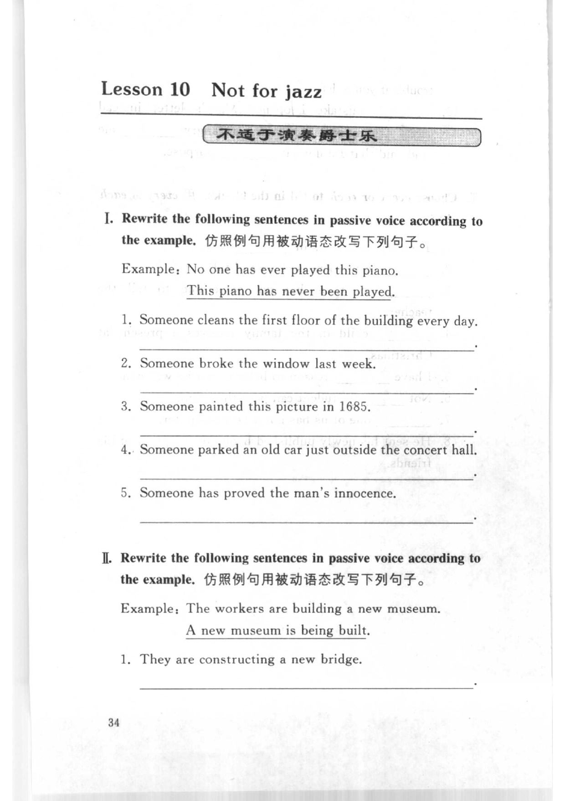
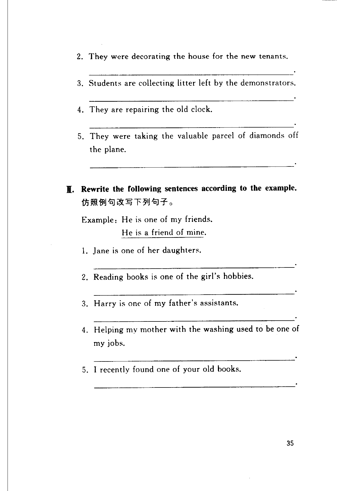
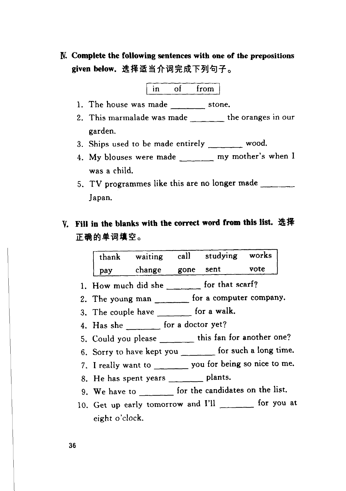

Grammar exercises · 语法练习
I. Rewrite the following sentences in passive voice according to the example.
仿照例句用被动语态改写下列句子。
Example · 例句
No one has ever played this piano.
This piano has never been played.
-
I. Passive voice — Someone cleans the first floor of the building every day.
-
I. Passive voice — Someone broke the window last week.
-
I. Passive voice — Someone painted this picture in 1685.
-
I. Passive voice — Someone parked an old car just outside the concert hall.
-
I. Passive voice — Someone has proved the man's innocence.
II. Rewrite the following sentences in passive voice according to the example.
仿照例句用被动语态改写下列句子。
Example · 例句
The workers are building a new museum.
A new museum is being built.
-
II. Passive voice — They are constructing a new bridge.
-
II. Passive voice — They were decorating the house for the new tenants.
-
II. Passive voice — Students are collecting litter left by the demonstrators.
-
II. Passive voice — They are repairing the old clock.
-
II. Passive voice — They were taking the valuable parcel of diamonds off the plane.
III. Rewrite the following sentences according to the example.
仿照例句改写下列句子。
Example · 例句
He is one of my friends.
He is a friend of mine.
-
III. Rewrite — Jane is one of her daughters.
-
III. Rewrite — Reading books is one of the girl's hobbies.
-
III. Rewrite — Harry is one of my father's assistants.
-
III. Rewrite — Helping my mother with the washing used to be one of my jobs.
-
III. Rewrite — I recently found one of your old books.
IV. Complete the following sentences with one of the prepositions given below.
选择适当介词完成下列句子。
in · of · from
-
IV. Prepositions — The house was made stone.
-
IV. Prepositions — This marmalade was made the oranges in our garden.
-
IV. Prepositions — Ships used to be made entirely wood.
-
IV. Prepositions — My blouses were made my mother's when I was a child.
-
IV. Prepositions — TV programmes like this are no longer made Japan.
V. Fill in the blanks with the correct word from this list.
选择正确的单词填空。
thank · waiting · call · studying · works · pay · change · gone · sent · vote
-
V. Word list — How much did she for that scarf?
-
V. Word list — The young man for a computer company.
-
V. Word list — The couple have for a walk.
-
V. Word list — Has she for a doctor yet?
-
V. Word list — Could you please this fan for another one?
-
V. Word list — Sorry to have kept you for such a long time.
-
V. Word list — I really want to you for being so nice to me.
-
V. Word list — He has spent years plants.
-
V. Word list — We have to for the candidates on the list.
-
V. Word list — Get up early tomorrow and I'll for you at eight o'clock.
Original images · 原图对照
Expand a page to compare it with the transcription. Open the original in a new tab to zoom in.
展开原图核对文字，也可以在新标签页打开原图放大查看。
Book page 1 · Exercise I (passive voice, items 1–5) and Exercise II (item 1)
Open original · 打开原图 ↗ Download original · 下载原图


Book page 2 · Exercise II (items 2–5) and Exercise III (items 1–5)
Open original · 打开原图 ↗ Download original · 下载原图


Book page 3 · Exercise IV (prepositions, items 1–5) and Exercise V (word list, items 1–10)
Open original · 打开原图 ↗ Download original · 下载原图


Your notes and answers
Use this space for longer responses or exercises that do not have an individual answer box.